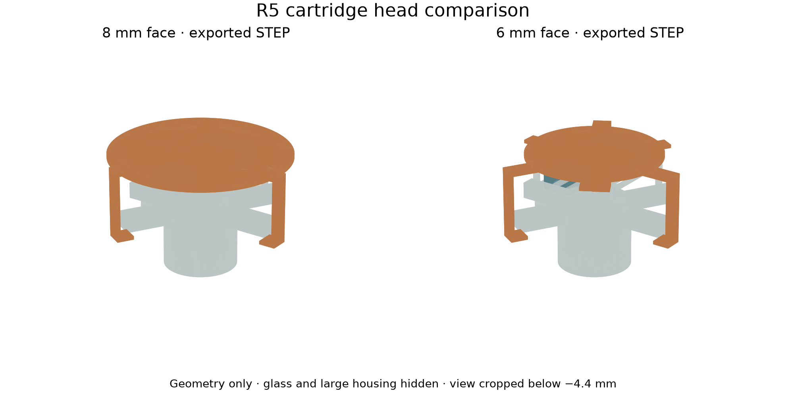
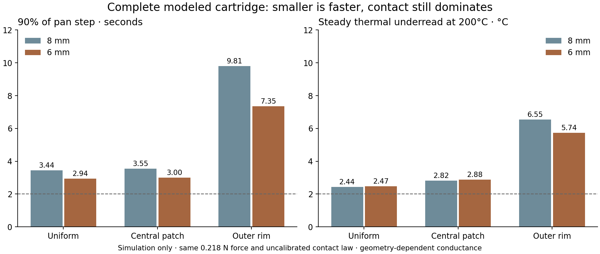

R5 · CAD + SIMULATION + TEST PREPARATION · PHYSICAL NOT_RUN
Both the 8 mm reference and 6 mm comparison head now include protected cap-moving joins, attachment films, the hot anchor and full formed wire routes. The model reads the exported CAD properties, and an independent STEP check verifies cap volume and contact-face area.

6 mm full assembly STEP · 6 mm cap STEP · 8 mm reference STEP · Motion poses and assembly details · STEP/model parity checks
Geometry supports prototype preparation. Seal shapes and weld regions carry their stated qualification limits; the STEP is not a supplier-approved manufacturing release.
| Face | t90 of pan step | Steady thermal underread at 200°C |
|---|---|---|
| 8 mm | 3.44 s | 2.44°C |
| 6 mm | 2.94 s | 2.47°C |
These uniform-contact cases use the same force and contact-law assumptions. Smaller area changes contact conductance; it is not given the same heat transfer for free. The full wire, cover and support masses explain why these results are slower than earlier simplified models.

Thermal bias excludes the additional 1°C proposed calibration/readout/reference reserve. Contact coefficients, losses and material properties are uncalibrated. Central and rim patterns are hypotheses, not measured cookware populations. Model scope and finite-ramp results.
| Gap | R5 work | Physical evidence | Details |
|---|---|---|---|
| spatial model | Spatial cap and wire model; final CAD dimensions and masses | NOT_RUN | Review evidence |
| sealed pressure | Dry vented fixture selected; blocked path and liquid-head screens | NOT_RUN | Review evidence |
| seal250C | Compound candidate retained; custom sealed assembly remains unresolved | NOT_RUN | Review evidence |
| jam detection | Mechanical challenge and optional electrical coupon; residual blind faults explicit | NOT_RUN | Review evidence |
| retention | Captured head, motion poses, load-path and inspection package | NOT_RUN | Review evidence |
| bond leads | Moving bonded covers, weld regions and complete smooth wire routes | NOT_RUN | Review evidence |
| whole system accuracy | Actual thermal cases plus a declared 1°C planning reserve | NOT_RUN | Review evidence |
| induction | CAD-derived roof screen, pickup sensitivities and prepared physical tests | NOT_RUN | Review evidence |
| physical qualification | Raw evidence templates and inherited acquisition tools; no physical measurements | NOT_RUN | Review evidence |
The pressure study selects a remote open dry reference for the bench. It does not provide a spill seal. Mechanical challenge and pan-cap impedance experiments reduce some blind spots, but conductive contamination and correlated faults prevent treating them as proven local thermal-contact detection. Production control remains inhibited.
A complete supplier-reviewed liquid boundary and a demonstrable independent contact method are required before advancing this into a sealed cooker cartridge. Retention, forming, bond, weld and insulation qualification still need the physical evidence specified in the build/test package.
R5 overview · Executed verification · CAD scalar contract · Thermal results · Current whole-system planning budget · Nine-gap evidence ledger · Full artifact identities